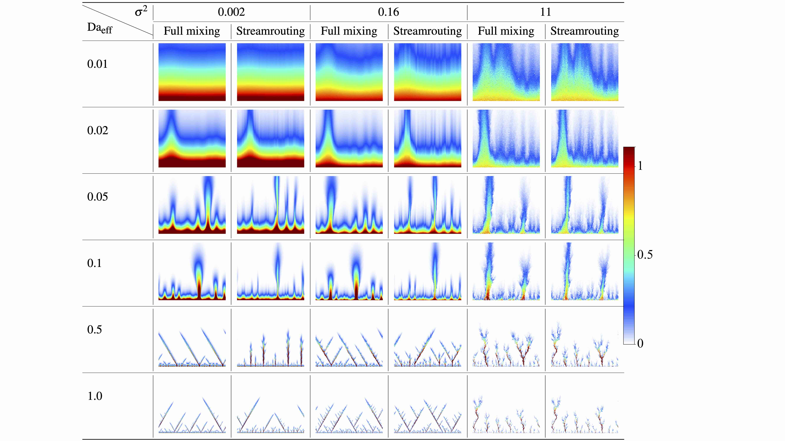
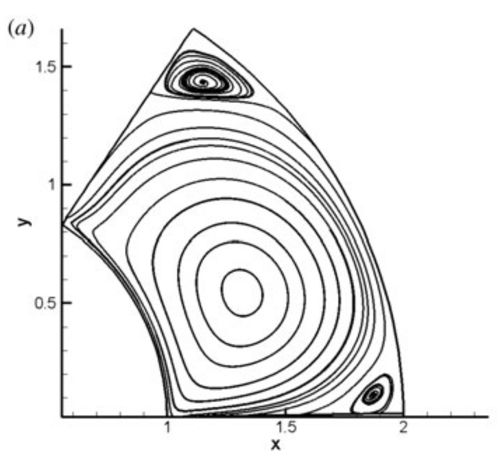
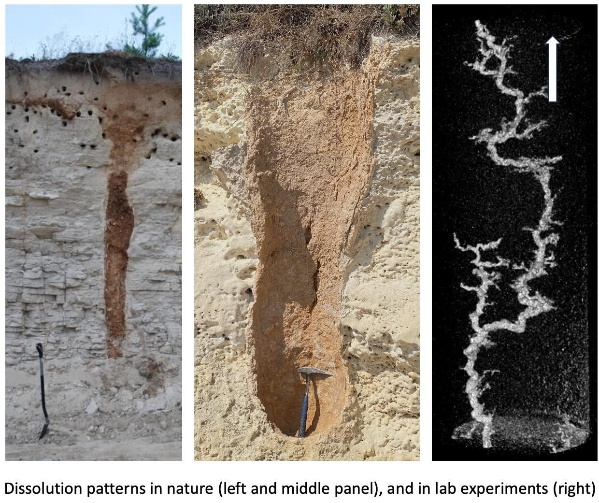

High-pressure crystallography
Mapping structural transitions in functional materials with diffraction, phase diagrams, and careful sample environments.
About
Academic physicist studying how quantum materials change under pressure, temperature, and structural constraint.
Research
Mapping structural transitions in functional materials with diffraction, phase diagrams, and careful sample environments.
Exploring competing phases, nodal structures, and emergent electronic behavior in correlated and topological systems.
Building reproducible analysis pipelines for figures, manuscripts, and collaborative experimental records.



Selected Work
2026
Manuscript in preparation. Experimental phase behavior, structural refinement, and computational comparison.
2025
Analysis of electronic structure signatures under controlled perturbation.
2024
High-pressure measurements, refined phase boundaries, and reproducible figure workflows.
Teaching
Mentoring students in data analysis, uncertainty-aware plotting, and scientific writing.
Teaching laboratory physics with emphasis on reproducibility, instrumentation, and clear notebooks.
Developing small computational tools for research groups and classroom demonstrations.
Contact
Open to conversations about high-pressure experiments, quantum materials, scientific publishing, and research tooling.